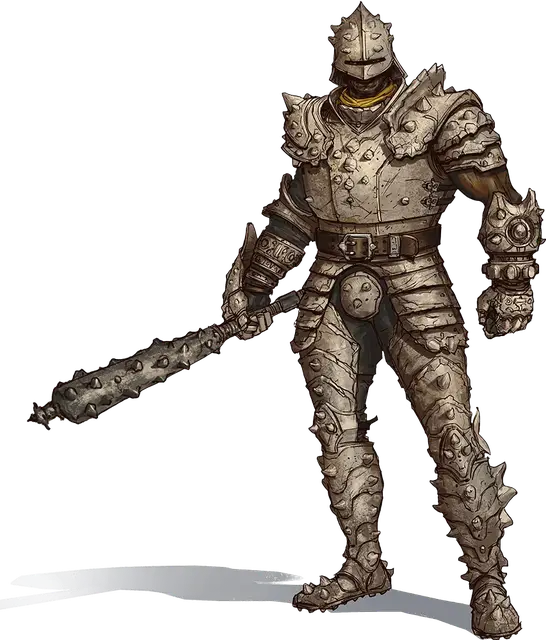

Страж Чёрной Земли
Black Earth Guard
Средний Гуманоид (Человек), нейтрально-злой

Класс Доспеха 18 (латы)
Хиты 39 (6к8 + 12)
Скорость 30 футов
| мод | спас | ||
|---|---|---|---|
| СИЛ | 17 | +3 | +3 |
| ЛОВ | 11 | +0 | +0 |
| ТЕЛ | 14 | +2 | +2 |
| мод | спас | ||
|---|---|---|---|
| ИНТ | 10 | +0 | +0 |
| МДР | 10 | +0 | +0 |
| ХАР | 9 | −1 | −1 |
Навыки Восприятие +2, Запугивание +1
Чувства пассивное Восприятие 12
Языки Общий
Опасность 2 (450 опыта)
Бонус мастерства +2
Действия
Мультиатака. Страж совершает две рукопашные атаки.
Моргенштерн. Рукопашная атака оружием: +5 к попаданию, досягаемость 5 фт., одна цель. Попадание: колющий урон 7 (1к8 + 3).
Реакции
Непоколебимость. Когда на стража воздействует эффект, который должен передвинуть его, сбить с ног или сделать и то, и другое, он может использовать реакцию, чтобы не двигаться и устоять на ногах.
Описание
Стражи Чёрной Земли выступают в качестве основной ударной силы культа. Это свирепые, тяжеловооружённые головорезы, слепо повинующиеся Огремоху. Их верность даровала им сверхъестественную способность не склоняться ни под какими ударами. Также они получили право носить специальные доспехи из элементального камня, которые ломаются при смерти стража.
Стражи фанатично преданы жрецам Чёрной Земли и лидерам культа. Они будут сражаться до смерти, если им прикажут, а самые перспективные из них становятся подземными акулами.